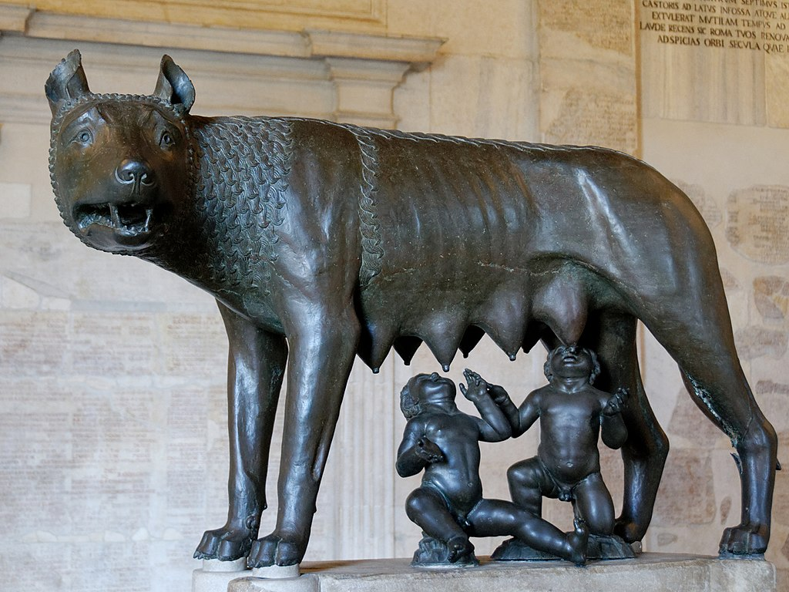

<head>
<meta charset="UTF-8" />
<meta name="keywords" content="drawing, painting" />
<meta name="description" content="drawings by Sunjy" />
<title>Sunjy</title>
<link rel="shortcut icon" type="image/x-icon" href="../../mImages/mCommon/favicon.ico" media="screen" />
<link rel="stylesheet" type="text/css" href="../../mCsses/mCommon/mCssA.css" />
<link rel="stylesheet" type="text/css" href="../../mCsses/mCommon/mCssB.css" />
<link rel="stylesheet" type="text/css" href="../../mCsses/mCommon/mCssC.css" />
<link rel="stylesheet" type="text/css" href="../../mCsses/mCommon/mCssD.css" />
<link rel="stylesheet" type="text/css" href="../../mCsses/mContent/mCssA.css" />
<link rel="stylesheet" type="text/css" href="../../mCsses/mContent/mCssB.css" />
<link rel="stylesheet" type="text/css" href="../../mCsses/mContent/mCssC.css" />
<link rel="stylesheet" type="text/css" href="../../mCsses/mContent/mCssD.css" />
</head>
<script type="text/javascript" src="../../mScripts/mContent/mContentAA.js" /></script>
<script type="text/javascript" src="../../mScripts/mContent/mContentAB.js" /></script>
<script type="text/javascript" src="../../mScripts/mContent/mContentAC.js" /></script>
<script type="text/javascript" src="../../mScripts/mContent/mContentAD.js" /></script>
<script type="text/javascript"></script> 
<script type="text/javascript">
document.write('<div class="mImgAbsolute"></div>');
/*
document.write('<p class="mFontSizeBColor" />From a white paper...</p>');
document.write('<table class="center"><tr><td>');
document.write('');
document.write('</td></tr></table>');
*/
</script>


<script type="text/javascript">
document.write('<p class="mFontSizeBColor" />Capitoline Wolf – Symbol of Rome</p>');
document.write('<p class="mFontSizeSColor" />The Capitoline Wolf represents the ancient legend of the founding of Rome. It is a bronze sculpture of the she-wolf suckling the twins, Romulus and Remus.<br><br>The wolf is depicted in a watchful pose with alert ears and glaring eyes watching. The human twins sculpted in a completely different style, are absorbed in their suckling.<br><br>The She-wolf is the symbol of the city of Rome. It is one of the ancient symbols of Rome associated with its mythology and founding story. It is a symbol that can be seen throughout Italy and Rome.<br><br>The Capitoline Wolf takes its name from where it is housed in the Capitoline Museums in Rome.<br><br>The myth of Romulus and Remus starts before Rome was founded. It begins when the grandfather of the twins, was overthrown by his brother, who then ordered that the twins be cast into the Tiber River and to their death.<br><br>They were rescued by a she-wolf who cared for them until a herdsman, found and raised them. Thus the she-wolf from the legend of the twins has become a symbol of Rome from ancient times.<br><br>When Romulus and Remus became adults, they took back their grandfather’s kingdom and established a city, which grew into Rome. They later quarreled, and Romulus killed his brother, Remus, thus beginning the history of Rome with a fratricide.<br><br>An interesting backstory to this sculpture is the ongoing debate concerning the date of the Capitoline She-wolf. The wolf was initially cast without the twins, and they were a later addition.<br><br>The twins are Renaissance additions to the sculpture. It has long been believed that the wolf dated to the fifth century B.C.E. and from the Etruscan culture.<br><br>However, this date is now debated by new research. If the wolf of the original sculpture is Etruscan in origin, then it did not depict Rome’s she-wolf.<br><br>Rome acquired the statue as it surpassed the Etruscans in military might and repurposed the art for its political ends as it did with much of Greek art.<br><br>This sculpture image was used on the poster for the 1960 Summer Olympics in Rome and as the emblem for the games. Sporting teams and academic institutions have used the image.<br><br>This famous image can be found in paintings, sculptures and signs, logos, flags, and building sculptures.<br><br>Founding of Rome<br><br>The Founding of Rome is recounted in traditional stories handed down by the ancient Romans themselves as the earliest history of their city in terms of legend and myth.<br><br>The most famous of all Roman myths is the story of Romulus and Remus, twins who were suckled by a she-wolf as infants in the 8th century BC.<br><br>An earlier account claims that the Roman people are descended from Trojan War hero Aeneas. Aeneas had escaped to Italy after the war, and whose son, Iulus, was the ancestor of the family of Julius Caesar.<br><br>The archaeological evidence of human occupation of the area of modern-day Rome, Italy, dates from about 14,000 years ago.<br><br>Romulus and Remus<br><br>Romulus and Remus, in Roman mythology, are twin brothers, whose story tells the events that led to the founding of the city of Rome and the Roman Kingdom by Romulus.<br><br>Although the tale takes place before the founding of Rome around 750 BC, the earliest known written account of the myth is from the late 3rd century BC.<br><br>National Myths<br><br>A national myth is a revealing account of an incident about the nation’s past. Such myths often serve as an important national symbol and affirm a set of national values.<br><br>A widespread myth may sometimes take the form of a national epic.<br><br>The myth of the foundation of Rome is the tale of Romulus and Remus. Virgil had broadened the Romulus and Remus tale in his Aeneid to include the odyssey of Aeneas.<br><br>In the Aeneid, the line of descendants leading to the famous twins and their descent started with Aeneas and his royal line.<br><br>Similarly, the Old Testament’s story of the Exodus serves as the founding myth for the community of Israel.<br><br>The Exodus reveals how God delivered the Israelites from slavery and how they, therefore, belonged to him through the Covenant of Mount Sinai.<br></p>');
document.write('<table class="center" /><tr><td>');
document.write('<br>The wolf is depicted in a watchful pose with alert ears and glaring eyes watching. The human twins sculpted in a completely different style, are absorbed in their suckling.<br><br>The She-wolf is the symbol of the city of Rome. It is one of the ancient symbols of Rome associated with its mythology and founding story. It is a symbol that can be seen throughout Italy and Rome.<br><br>The Capitoline Wolf takes its name from where it is housed in the Capitoline Museums in Rome.<br><br>The myth of Romulus and Remus starts before Rome was founded. It begins when the grandfather of the twins, was overthrown by his brother, who then ordered that the twins be cast into the Tiber River and to their death.<br><br>They were rescued by a she-wolf who cared for them until a herdsman, found and raised them. Thus the she-wolf from the legend of the twins has become a symbol of Rome from ancient times.<br><br>When Romulus and Remus became adults, they took back their grandfather’s kingdom and established a city, which grew into Rome. They later quarreled, and Romulus killed his brother, Remus, thus beginning the history of Rome with a fratricide.<br><br>An interesting backstory to this sculpture is the ongoing debate concerning the date of the Capitoline She-wolf. The wolf was initially cast without the twins, and they were a later addition.<br><br>The twins are Renaissance additions to the sculpture. It has long been believed that the wolf dated to the fifth century B.C.E. and from the Etruscan culture.<br><br>However, this date is now debated by new research. If the wolf of the original sculpture is Etruscan in origin, then it did not depict Rome’s she-wolf.<br><br>Rome acquired the statue as it surpassed the Etruscans in military might and repurposed the art for its political ends as it did with much of Greek art.<br><br>This sculpture image was used on the poster for the 1960 Summer Olympics in Rome and as the emblem for the games. Sporting teams and academic institutions have used the image.<br><br>This famous image can be found in paintings, sculptures and signs, logos, flags, and building sculptures.<br><br>Founding of Rome<br><br>The Founding of Rome is recounted in traditional stories handed down by the ancient Romans themselves as the earliest history of their city in terms of legend and myth.<br><br>The most famous of all Roman myths is the story of Romulus and Remus, twins who were suckled by a she-wolf as infants in the 8th century BC.<br><br>An earlier account claims that the Roman people are descended from Trojan War hero Aeneas. Aeneas had escaped to Italy after the war, and whose son, Iulus, was the ancestor of the family of Julius Caesar.<br><br>The archaeological evidence of human occupation of the area of modern-day Rome, Italy, dates from about 14,000 years ago.<br><br>Romulus and Remus<br><br>Romulus and Remus, in Roman mythology, are twin brothers, whose story tells the events that led to the founding of the city of Rome and the Roman Kingdom by Romulus.<br><br>Although the tale takes place before the founding of Rome around 750 BC, the earliest known written account of the myth is from the late 3rd century BC.<br><br>National Myths<br><br>A national myth is a revealing account of an incident about the nation’s past. Such myths often serve as an important national symbol and affirm a set of national values.<br><br>A widespread myth may sometimes take the form of a national epic.<br><br>The myth of the foundation of Rome is the tale of Romulus and Remus. Virgil had broadened the Romulus and Remus tale in his Aeneid to include the odyssey of Aeneas.<br><br>In the Aeneid, the line of descendants leading to the famous twins and their descent started with Aeneas and his royal line.<br><br>Similarly, the Old Testament’s story of the Exodus serves as the founding myth for the community of Israel.<br><br>The Exodus reveals how God delivered the Israelites from slavery and how they, therefore, belonged to him through the Covenant of Mount Sinai.<br>" />');
document.write('</td></tr></table>');
</script>


